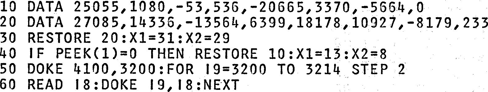

INMC News |
Autumn 1979 · Issue 4 |
| Page 25 of 30 |
|---|
in an article written by Kerr Borland for issue one of Personal Computer World there was no mention of it, though he did offer the 4K RAM board, Yes, you’ve guessed it, another £40 hole in my pocket, And unfortunately that’s as far as I’ve got. The cash has run out, but not the enthusiasm – yet.
Would someone out there please, write a simple article on learning to program the Nascom in HEX for those of us who are having difficulty starting out and for whom the programming manual makes no sense at all?
By now you must be asking how much does he want for his Nascom? But no, I’ve enjoyed every minute of the paperchase in building it and trying to expand, and I am enjoying, if struggling, my programming, and so the saga will continue, (funds and wife permitting).
In closing I’ve just one final thing to say, and that’s to Kerr Borland. We, the Nascom 1 users DEMAND NAS-SYS – NOW.
Les Pickstock
Wirral
Did you know that the 8K Basic can be persuaded to accept ‘INPUT’ strings with commas in them ? Try this:
First set up the machine code input.
Now go and get the string (including commas)
100 GOSUB 200 110 PRINT A$:GOTO100
This subroutine replaces the normal ‘INPUT’ command
Two things here, firstly we have setup a machine code ‘INKEY$’ command, then using that, we continually add to A$ until a ‘new line’ is found in line 240. All keyboard characters will be accepted except ‘new line’, and ‘back space’ which are treated separately. Note that line 30 assumes that Nasbug is in use, whilst line 40 resets the pointers if NAS-SYS is present. See LITTLE KNOWN FACT (3) and the 8K Basic page for further details.
| Page 25 of 30 |
|---|